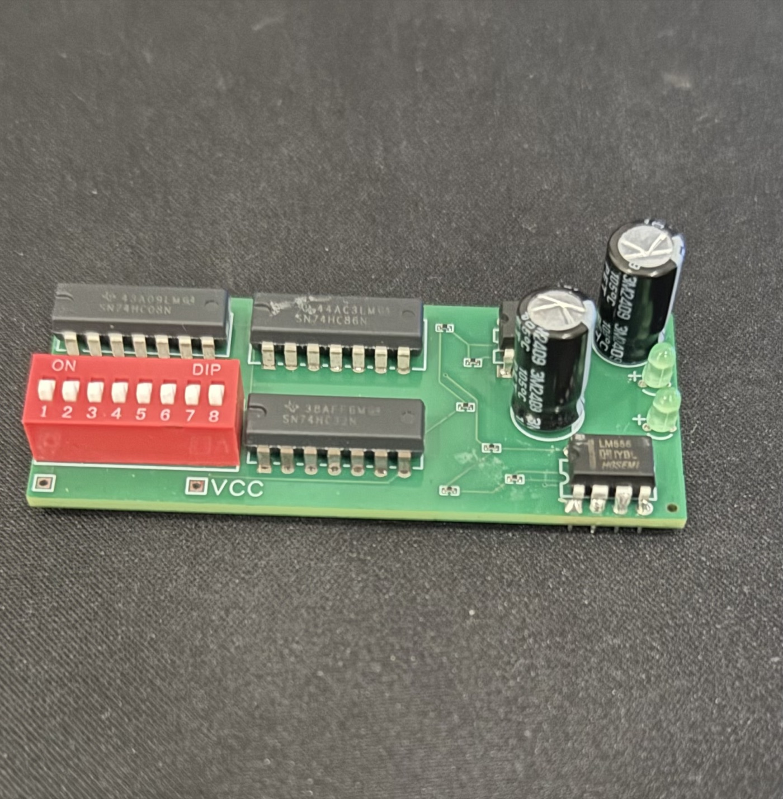
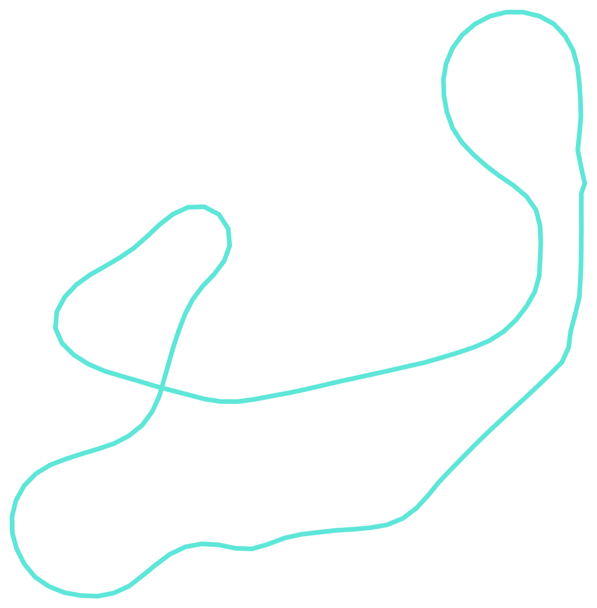

-
ClosingLine
Sports picks, backed by a model.
Pick NHL and MLB games, build parlays with free virtual Points, and see how a prediction model rates every pick before you make it. Your bets update live as the games play out.
Co-founded with Dylan Plut and Brenden Auger. I built the iPhone app, the website and the server they both run on.
+1,587Points betting 100 on the top pick every night, 2024 NHL season


-
Tulip
Your travel, on Earth.
A 3D globe for everywhere you've been and everywhere you want to go. Pin places, plan trips with friends, and forward a booking email to drop it into the right trip.
Co-founded with Brenden Auger. I built the website, the iPhone app and the server behind them.
900+commits since May 2026

-
Circuit Board
From breadboard to printed circuit board.
I took a blinking half adder off a breadboard and turned it into a real two-layer circuit board, designed in EasyEDA and made by JLCPCB.
Paid for by Hack Club's OnBoard grant.

-
Forza Telemetry
Lap analysis for Forza Motorsport.
Forza streams live data from your car while you drive. A small Node server listens for those packets and rebroadcasts them over a WebSocket. The Next.js dashboard draws every lap on the track, splits it into mini-sectors and lays laps side by side, so you can see which corners cost you time.
1:24.506my best lap on Maple Valley, in a Hyundai Elantra N

Earlier work
- GPT-4 Website ↗
- A simple site for chatting with GPT-4.
- DALL-E Website ↗
- My first HTML project, a front end for DALL-E.
- Discord Leave Bot ↗
- A Discord bot that can leave any server it's in.